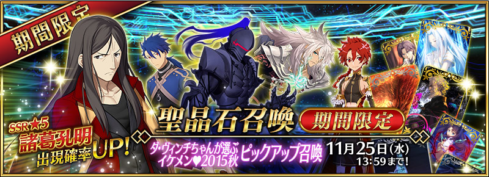
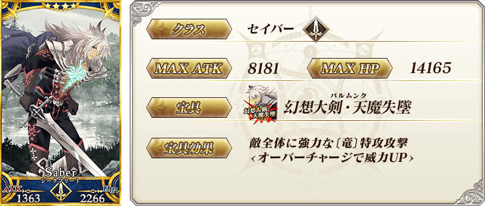
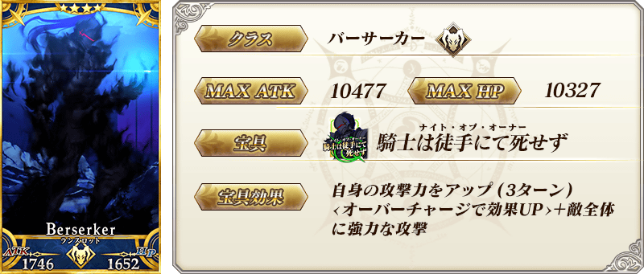
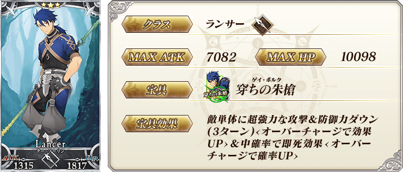
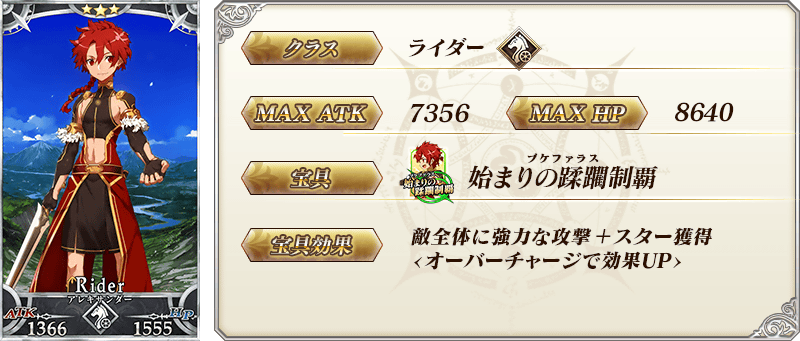
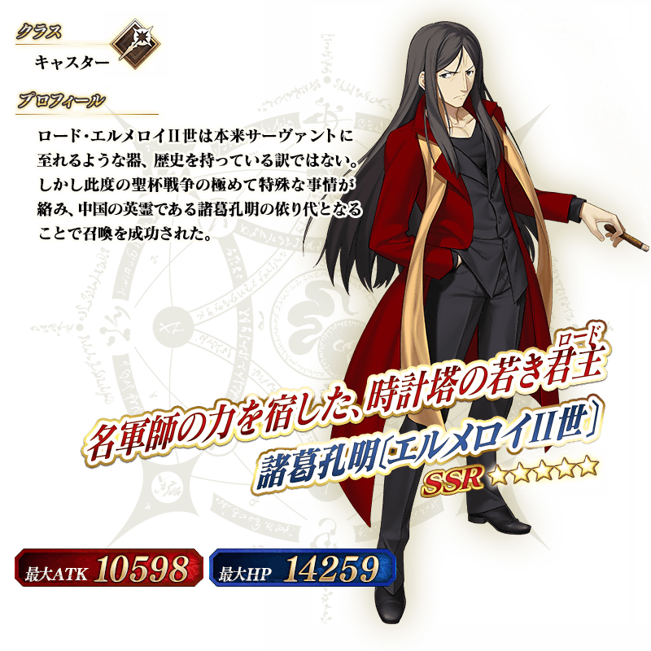

◆Pick Up召喚期間◆
期間：11/18日（三）15:00～11/25（三）12:59
以期間限定舉辦達文西醬精選美男子2015秋Pick Up召喚！
以「★5（SSR）諸葛孔明〔埃爾梅羅II世〕」為首的4位Pick Up Servant的出現率提升！
10次召喚★4(SR)以上1枚確定和★3(R)以上的Servant1位確定！
※★4(SR)以上確定包含Servant和概念禮裝。
以期間限定舉辦達文西醬精選美男子2015秋Pick Up召喚！
以「★5（SSR）諸葛孔明〔埃爾梅羅II世〕」為首的4位Pick Up Servant的出現率提升！
10次召喚★4(SR)以上1枚確定和★3(R)以上的Servant1位確定！
※★4(SR)以上確定包含Servant和概念禮裝。







